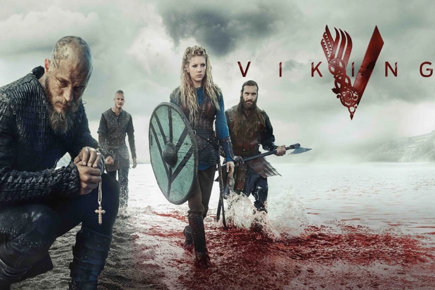
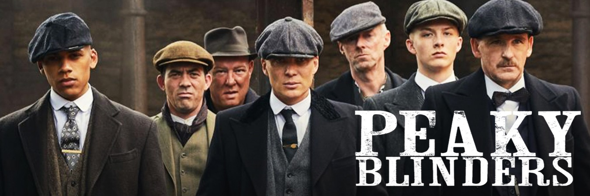
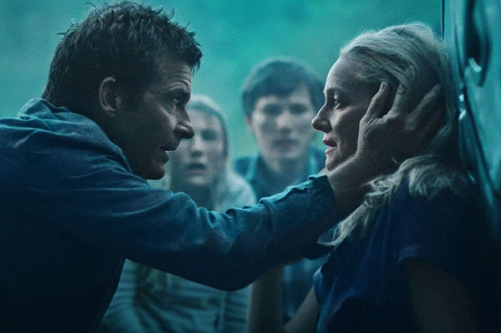
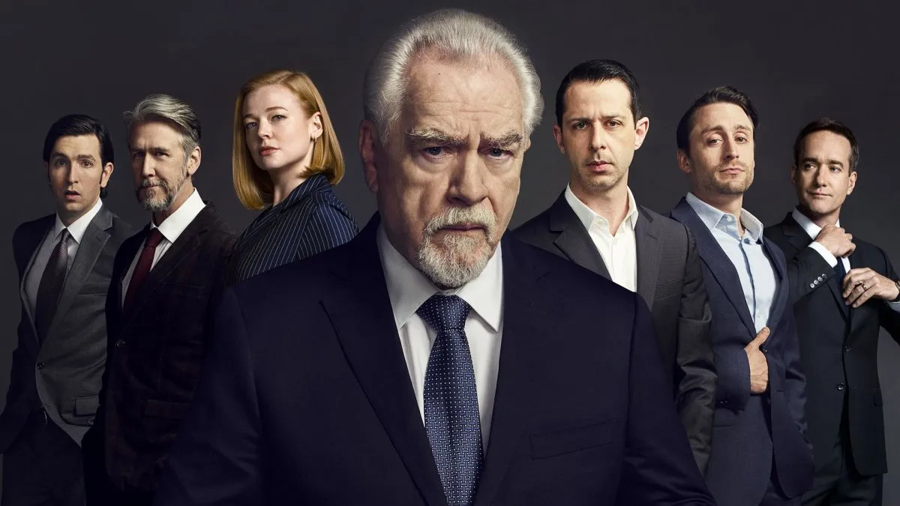
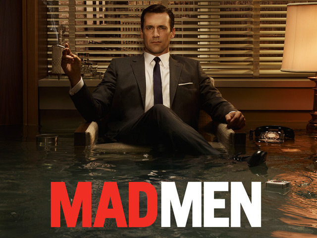
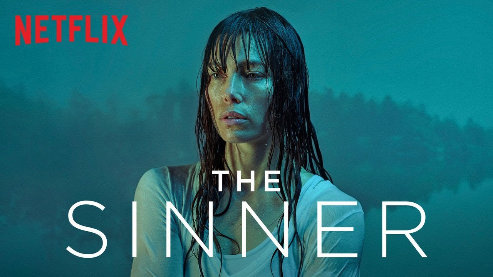

Juego de tronos
Es una serie de televisión de drama y fantasía medieval desarrollada por David Benioff y D. B. Weiss y producida por la cadena HBO. Su argumento está inspirado en la serie de novelas Canción de hielo y fuego, escrita por el estadounidense George R. R. Martin, y relata las vivencias de un grupo de personajes de distintas casas nobiliarias en el continente ficticio de Poniente para tener el control del Trono de Hierro y gobernar los siete reinos que conforman el territorio.

Vikingos
Vikingos está inspirada en las sagas del vikingo Ragnar Lodbrok, uno de los héroes nórdicos legendarios más conocidos y notorio como el flagelo de Inglaterra y Francia. El programa retrata a Ragnar como un granjero que ha conseguido construir barcos revolucionarios con instrumentos de navegación también revolucionarios. Con ellas puede hacer exitosas incursiones en Inglaterra, alcanzar la fama y convertirse en un rey escandinavo, con la ayuda de su familia y sus guerreros
Breaking Bad
Breaking Bad es una serie de televisión estadounidense creada y producida por Vince Gilligan. Narra la historia de Walter White (Bryan Cranston), un profesor de química con problemas económicos a quien le diagnostican un cáncer de pulmón inoperable. Para pagar su tratamiento y asegurar el futuro económico de su familia, comienza a cocinar y vender metanfetamina junto con Jesse Pinkman (Aaron Paul), un antiguo alumno suyo.

Peaky Blinders
Peaky Blinders es una serie de televisión inglesa de drama histórico, emitida por el canal BBC Two. La serie está protagonizada por Cillian Murphy y se centra en una familia de gánsteres de Birmingham, durante los años veinte y del ascenso de su jefe, Thomas Shelby, un mafioso que dominará toda Inglaterra, después de afrontar una terrible guerra. Shelby, pese a ser un criminal y un mafioso, tiene rasgos antiheroicos, pues es un personaje ambivalente que, pese a su brutalidad, en muchas ocasiones es la única esperanza para terminar con otros villanos que pueden considerarse más viles y mezquinos que él.
Ozark
Jason Bateman es el protagonista de esta serie y director de los dos primeros y dos últimos episodios de la primera temporada. Bateman encarna al asesor financiero Marty Byrde, con Laura Linney en el rol de su esposa Wendy, quienes súbitamente deben cambiar de residencia desde una urbanización en las afueras de Chicago a un resort de verano en Ozarks (Misuri) después de que un jefe de un cartel les cuestione a él y a su socio sobre una operación de blanqueo de dinero. Marty, para salvar su vida y la de su familia, se compromete a lavar una gran suma de dinero en tiempo récord de este poderoso narcotraficante mexicano. La primera temporada se emitió en Netflix a partir del 21 de julio de 2017.
Sucession
Succession es una serie de televisión de drama estadounidense creada por Jesse Armstrong, con Will Ferrell y Adam McKay como productores ejecutivos, que se emitió en HBO del 3 de junio de 2018 al 28 de mayo de 2023. La serie se centra en la familia Roy, los propietarios del conglomerado mundial de medios y entretenimiento Waystar RoyCo, y su lucha por el control de la empresa en medio de la incertidumbre sobre la salud del patriarca de la familia.
Mindhunter
La serie está ambientada en 1977 y se centra en dos agentes de la FBI —interpretados por Jonathan Groff y Holt McCallany—, quienes entrevistan a asesinos en serie en prisión para intentar resolver casos en curso. A finales de los años 70, dos agentes de la FBI se reúnen con asesinos y violadores encarcelados para desarrollar perfiles psicológicos de criminales, pero sus jefes temen que se están involucrando demasiado con sus entrevistados.

Mad Men
La acción de Mad Men se sitúa en los años 1960, inicialmente en la ficticia agencia de publicidad Sterling Cooper, en la Avenida Madison, Nueva York, que posteriormente pasa a ser Sterling Cooper Draper Pryce (más tarde Sterling Cooper & Partners) situada, a dos avenidas de distancia, en el edificio Time-Life, en la Avenida de las Américas (Sexta Avenida).
The sinner
The Sinner es una serie de televisión estadounidense de misterio basada en la novela homónima de Petra Hammesfahr. En su primera temporada, la serie sigue los eventos ocurridos después de que una joven madre asesinase a un hombre en público y a plena luz del día, sin tener un motivo aparente. El detective Harry Ambrose es el encargado de investigar a fondo para tratar de revelar este misterioso asesinato. Personalmente es mi favorita y la que hizo que entrara en mi top 10. Las otras dos temporadas son muy buenas pero esta no tiene comparacion.
Dark
Dark es una serie de televisión web alemana de suspense y ciencia ficción creada por Baran bo Odar y Jantje Friese. Situada en la ficticia ciudad de Winden (Alemania), Dark sigue las secuelas de la desaparición de un niño que expone los secretos y las conexiones ocultas entre cuatro familias mientras desentrañan lentamente una siniestra conspiración de viaje en el tiempo que abarca tres generaciones. A lo largo de la serie, Dark explora las implicaciones existenciales del tiempo y sus efectos sobre la naturaleza humana.
Fin de la lista! Si haz visto alguna, escoge tu favorita 😊